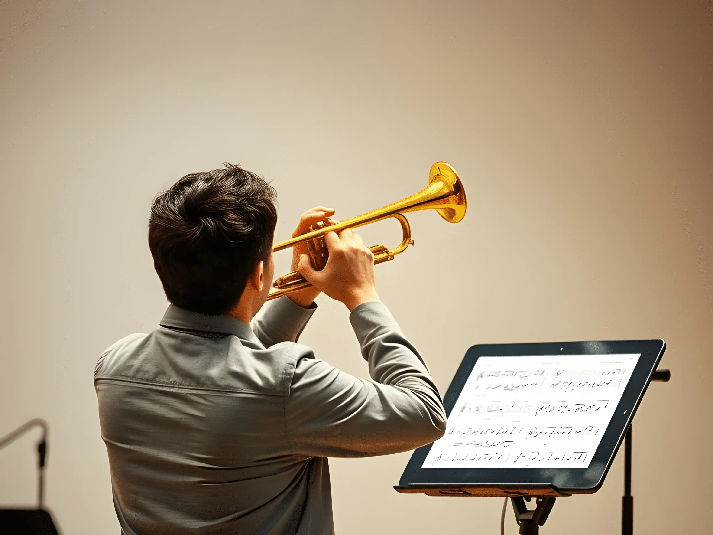

La Plataforma para el Estudio Musical Técnico 🎼
¿Qué es Music Skiller?
Music Skiller es una innovadora aplicación web diseñada para estudiantes y profesores de música que buscan
mejorar su técnica instrumental.
Nuestra plataforma ofrece un extenso repositorio de estudios técnicos
clasificados por nivel y especialidad, accesibles en cualquier momento y desde cualquier dispositivo.
Si eres estudiante de conservatorio o profesor de clases de música, aquà encontrarás una herramienta que
simplifica el acceso a materiales de estudio sin necesidad de cargar libros.
Accede a Estudios Técnicos en Segundos
A diferencia de otras plataformas, en Music Skiller puedes encontrar y practicar ejercicios musicales en solo 10 segundos.
Nuestra interfaz intuitiva te permite buscar partituras de manera rápida y efectiva, con opciones para trombón, piano y
otros instrumentos.

🵠Beneficios de Music Skiller:
✅ Acceso inmediato a ejercicios técnicos organizados por niveles.
✅ Compatible con tablets y dispositivos móviles, ideal para usar en clases y ensayos.
✅ Registro gratuito y acceso desde cualquier lugar.
¿Para quién está diseñada Music Skiller?
👨‍🎓 Estudiantes de conservatorio: facilita el estudio con material técnico accesible.
🺠Profesores de música: ofrece recursos organizados para mejorar la enseñanza.
🫠Escuelas y conservatorios: un complemento perfecto para programas educativos.

Un Proyecto Creado por Músicos para Músicos
Music Skiller nace en Valencia, de la mano de Arturo Miquel Fortaña, técnico en desarrollo web y graduado en
Interpretación Musical, con más de 10 años de experiencia como profesor en conservatorios y escuelas de música.
Únete a Music Skiller y Revoluciona tu Forma de Estudiar Música
📅 Lanzamiento en septiembre de 2025.
🔗 RegÃstrate y accede a nuestro catálogo de estudios técnicos.
🶠¡Descubre una nueva forma de aprender música con Music Skiller! ğŸ¶